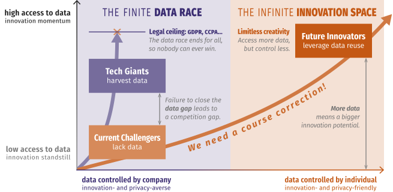

Developing Apps for a Decentralized Web
Ruben Verborgh
Ghent University – imec
Solid aims to restore choice
by separating data from apps.
-
Typical platforms nowadays store data
inseparably from an application.
- If we need to access the data, we cannot choose our app.
- If we need to use the app, we can’t choose our data source.
-
By separating data from apps,
we create independent choices.
-
In essence, we‘re taking Web apps back to desktop mode,
where one file can be opened by multiple apps.
Every piece of data created by a person
or about them, is stored in a data pod.

Apps and services appear similarly,
but they blend data from many sources.

A person can grant apps and people access
to very specific parts of their data.

Separating app and storage competition
creates better offerings for all parties.

By abandoning data harvesting,
we restore permissionless innovation.

Solid is not a platform to replace others,
but a way of building for the Web.
-
Solid is an ecosystem.
- Standards enable interoperability.
-
Solid is a movement.
- We need to shift the app builder mindset.
-
Solid is a community.
-
Building Solid requires different people,
companies, and organisations.
With JSON-LD, every piece of data
can link to any other piece of data.
{
"@context": "https://www.w3.org/ns/activitystreams",
"id": "#ruben-likes-thewebconf",
"type": "Like",
"actor": "https://ruben.verborgh.org/profile/#me",
"object": "https://www2022.thewebconf.org/#this",
"published": "2022-04-28T08:00:00Z"
}
Data shapes and their semantics
enable layered compatibility.
{
"@context": "https://www.w3.org/ns/activitystreams",
"id": "#ruben-likes-thewebconf",
"type": "Like",
"actor": "https://ruben.verborgh.org/profile/#me",
"object": "https://www2022.thewebconf.org/#this",
"published": "2022-04-28T08:00:00Z"
}
Different source data
can be concatenated.
{
"@context": "https://www.w3.org/ns/activitystreams",
"@graph": [{
"type": "Like",
"actor": "https://ruben.verborgh.org/profile/#me",
"object": "https://www2022.thewebconf.org/#this",
"published": "2022-04-28T08:00:00Z"
},{
"type": "Like",
"actor": "http://tomayac.com/thomas_steiner.rdf#me",
"object": "https://www2022.thewebconf.org/#this",
"published": "2022-04-28T10:00:00Z"
}]
}